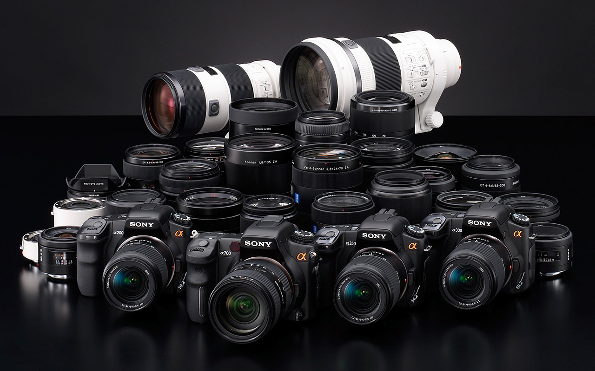

CAT is an independent media center working to educate and enpower the community.
Here in CAT, you can check-out professional multimedia equipments, enjoy our high quality studios, get hands-on trainings and share your works on our online/cable platforms!
Here in CAT, you can fulfill your dream.

CAT has an incredible amount of professional media production gear available to anyone who lives or works in Boone County. Go to Learn/Use to find out more about our resources.
We offer training courses in various media topics. Whether you're a seasoned pro or brand new to the video world, we have the staff and the tools to make you a producer in no time.
There's a number of different ways you can watch and share your show with tht community through CAT. We oofer cablecasting to more than 50,000 subscribers, LIVE webstream, podcasts and on-demand video at our website.
Beginning August 8, CAT's downtown community media center and offices will be OPEN WEEKLY WEDNESDAY through SATURDAY 12-8PM. We will be CLOSED Sundays, Mondays, & Tuesdays.
Our HD Studios at Stephens College will be available Thursdays and Fridays 12-8, by appointment only.